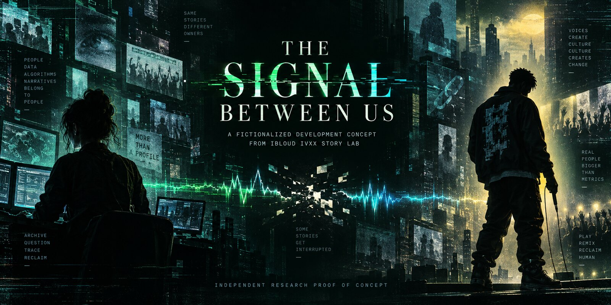

A distributed story becomes an auditable practice: public signal, platform amplification, musical witness, rights review, and a present-market return.
Independent project. Not affiliated with or endorsed by G-Eazy, Logic, Megan Thee Stallion, Our Bad Habit, RCA Records, Live Nation, Ticketmaster, the NFL, or the Endless Summer Tour.
Unofficial noncommercial research proof of concept. Limited excerpts may be proposed only for criticism, commentary, and transformative analysis under 17 U.S.C. § 107. Rights and fair-use review are recorded in CLEARANCE-LEDGER.md and FAIR-USE-PROOF-OF-CONCEPT.md prior to public or commercial distribution.
An established storytelling pattern
Distributed worldTumblr, Audio.com, Bluesky and GitHub operate as connected rooms rather than a single linear publication.
Persistent witnessIBLoud IVXX retains fragments, but does not convert association into unsupported fact.
Musical navigationTracks locate shifts in agency, obsession, danger, pain and exit.
Ethical resolutionThe archive documents public meaning-making while refusing claims about private reality.
Public story / fictionalized development concept
The hacker and the rapper

A hacker does not break into a rapper's private life. She enters the public machine built around him: feeds, deleted posts, headlines, recommendation systems, music fragments and fan certainty. What begins as an attempt to reconstruct one missing pitch becomes a confrontation with a system that turns attention into ownership.
The rapper first experiences the hacker as a threat. She appears to know too much because the network has made scattered public facts feel intimate. The hacker confronts the opposite problem: access is not permission, correlation is not truth, and an archive can harm the people it claims to preserve.
Can two creators recover agency from a system that profits when audiences confuse public signals with private truth?
Interpretive + Fictionalized. This premise is not a factual claim about any named artist, hacker, relationship or private event. It is not represented as recovery of the missing Tumblr pitch.
The Hacker/Artist story fragments were published on Tumblr on May 2, 2024, alongside G-Eazy's public Lady Killers III release window. A later “Storytelling Fact” post appeared June 5, one day before the official Freak Show World Tour trailer.
These dates establish contemporaneous publication and thematic proximity—not contact, causation, endorsement or influence.
What can parallel public timelines reveal about independent creators responding to the same cultural signals, and where must interpretation stop?
DOCUMENTED: publication dates and public releasesINTERPRETIVE: possible thematic relationshipUNRESOLVED: significance beyond coincidence
This inquiry remains open to additional verifiable public evidence and documented corrections. It does not imply that the artist or his representatives encountered or responded to this project.
Signal A fragment appears during Super Bowl LIV weekend.
Amplification Platforms and spectators assign a complete story to limited evidence.
Contradiction Public denial breaks the apparent certainty.
Witness IBLoud records the effect of the spectacle on her own creative practice.
Laboratory Loptr Lab separates evidence, attribution, interpretation and fiction.
Return The 2026 tour becomes a market test, not proof of affiliation.
A soundtrack under construction
The Audio.com catalogue fits the character's noir and fractured identity, but several mashups use identified commercial recordings. They remain research references until replaced or fully cleared.
dark cinematictrip-hopfractured pophuman-authored lyricsAI disclosed
Four suits, four eras. A complete 52-card map of the solo narrative, from the Bay Area come-up to quarantine introspection. Zero padding.
♣ Clubs — Must Be Nice (2012)
The Come-Up · Hunger · Early Identity · The Dream Before the Cost
A♣
The Arrival
"Hello"
The entry point · The first voice on the record
2♣
The Plastic Dream
"Plastic Dreams"
Artifice · Superficial goals · Chasing the flash
3♣
The Lady Killer
"Lady Killers"
Early charisma · The harmless rogue archetype
4♣
The Rage
"Mad"
Frustration · The pressure before the break
5♣
The Breath
"Breathe"
Inhale · Finding pace in the chaos
6♣
The Icon
"Marilyn"
Fascination with fame's casualties · The muse
7♣
The High
"Stay High"
Elevation · Numbing the climb
8♣
The Hunger
"Must Be Nice"
Ambition · The core drive · Bay Area grit
9♣
The Weight
"Loaded"
Burden of potential · Early success pressure
10♣
The Mirror
Must Be Nice (Album Whole)
Self-reflection · Looking at the project as a single entity
J♣
The Outsider
Pre-fame identity
The kid watching from outside the industry
Q♣
The Romantic
The early muse archetype
The woman on every early track · A ghost of inspiration
K♣
The Oakland King
Bay Area roots
The territory that made him · Foundation
♦ Diamonds — These Things Happen (2014)
Ambition · Consequence · The Major Label Arrival · Moody Atmospheric Truth
A♦
The Reckoning
"These Things Happen"
Acceptance of fate · The major label arrival
2♦
The Alliance
"Far Alone"
Distance created by success · New circles
3♦
The Intention
"I Mean It"
Declaration of purpose · Drawing a line
4♦
The Almost
"Almost Famous"
The threshold of stardom · The tension of 'almost'
5♦
The Cost
"Opportunity Cost"
Sacrifice of the come-up · Relationships lost
6♦
The Digital Girl
"Tumblr Girls"
Internet-era romance · The aestheticized muse
7♦
The Flood
"Lotta That"
Excess · The overwhelming nature of the lifestyle
8♦
The Downtown Ache
"Downtown Love"
Urban melancholy · Transient connections
9♦
The Whole
"Complete"
Brief clarity · Finding temporary peace in the storm
10♦
The Lost
"Let's Get Lost"
Escapism · The desire to vanish together
J♦
The Wound
"Shoot Me Down"
Vulnerability · The first signs of damage
Q♦
The Memory
"Remember You"
Haunting nostalgia · What stays behind
K♦
The Believer
"Just Believe"
Faith in the process · Closing the era with purpose
♥ Hearts — The Beautiful & Damned (2017)
Duality · Love & Destruction · Fame's True Cost · The Double Life
A♥
The Duality
"The Beautiful & Damned"
The core conflict · The split persona
2♥
The Prayer
"Pray For Me"
Seeking salvation · Acknowledging the fall
3♥
The Mirror Lovers
"Him & I"
Codependency · The Bonnie & Clyde illusion
4♥
The Fantasy
"But A Dream"
Waking up from the high life · The hangover
5♥
The Clarity
"Sober"
The fog lifting · Uncomfortable truths
6♥
The Legacy
"Legend"
Ego · The obsession with what is left behind
7♥
The No
"No Limit"
Unchecked ambition · The peak of the ego
8♥
The Crash
"Crash & Burn"
Inevitable collapse · The consequence of the high
9♥
The Season
"Summer In December"
Displacement · Coldness setting in
10♥
The Inheritance
"Charles Brown"
Generational weight · The burden passed down
J♥
The Beast
"Leviathan"
The consuming monster of fame · The shadow self
Q♥
The Mother
"Mama Always Told Me"
The grounding force · Wisdom ignored until too late
K♥
The Beautiful
"Eazy"
Self-acceptance · The self-named closing card
♠ Spades — Everything's Strange Here (2020)
Isolation · Introspection · Reinvention · Static
A♠
The Fool's Reimagining
"Everybody's Gotta Learn Sometime"
Departure · Reinvention · Unlearning
2♠
The Quarantine
"Everything's Strange Here"
Isolation · Forced Stillness · Global Static
3♠
The Temptation
"Free Porn Cheap Drugs"
Dopamine Loops · Cheap Escapes · Numbing
4♠
The Broken Heart
"Had Enough"
Resentment · Closure · Bitter Realizations
5♠
The Ghost of Nostalgia
"Nostalgia Cycle"
Romanticizing the Past · Idealization
6♠
The Existentialist
"In The Middle"
Purpose · Questioning Reality · Emptiness
7♠
The Resurrection
"Lazarus"
Rebirth · Artistic Survival · Shedding Weight
8♠
The Echo
"Stan By Me"
Longing · Unanswered Calls · Toxic Patterns
9♠
The Faded Frame
"Back To What You Knew"
Regression · Safety Nets · Outgrown Spaces
10♠
The Satellite
"All The Things You're Searching For"
External Validation · Seeking Signals
J♠
The Burning Year
"Every Night Of The Year"
Exhaustion · Cumulative Stress · Burnout
Q♠
The Static
*The noise between songs*
Quarantine as a state of being
K♠
The Signal
*The breakthrough*
The other side of the silence
The Strange Frequencies Spread
Card 3 The Distraction
Card 1 The Static
Card 2 The Room
Card 5 The Breakthrough
Card 4 The Unsent Voice
CAUTION: CONTAINS HIGH LEVELS OF INTROSPECTION.
DECK 2: THE FEATURES DECK // 52 CARDS
The Gemini Shadow Oracle
The collaborator as a different person. 52 non-album tracks, soundtrack loosies, and mixtape cuts where the shadow side shows up in someone else's world. Same four suits, inverted intent.
♣ Clubs — Street, Credibility & West Coast Collabs
Bay Area Passes · Hip-Hop Co-Signs · Proving Ground · The Turf
A♣
The Ambassador
E-40 – "Give Her Keys" (feat. G-Eazy)
The Bay Area co-sign · Proving ground
2♣
The Legacy Pass
Mistah F.A.B. – "Still Feelin' It" (Remix)
Hyphy movement lineage · Respect earned
3♣
The Heavyweight
Rick Ross – "Purple Brick Road" (feat. G-Eazy)
Entering the boss tier · Street credibility
4♣
The Pivot
Vic Mensa – "Reverse" (feat. G-Eazy)
Changing lanes · Adapting to new flows
5♣
The Mob Tie
A$AP TyY – "Trump" (feat. G-Eazy & Young Lord)
NYC connection · Shadow work
6♣
The Forbes List
Borgore – "Forbes" (feat. G-Eazy)
Chasing the bag · Early wealth flex
7♣
The Terror
Carnage – "Gokilla" (feat. G-Eazy & E-40)
Aggressive energy · Pure chaos
8♣
The Catalyst
"Runaround Sue" (feat. Greg Banks)
The college era breakout · Sample-flipping
9♣
The Local Hero
"Well Known" (Mixtape)
Pre-fame Bay Area swagger · Street buzz
10♣
The Preppy Rogue
"Waspy" (feat. Tennis)
Frat-rap aesthetics · The contrast of privilege
J♣
The Habit
"Reefer Madness" (Mixtape)
Early vices · The smoke screen
Q♣
The Hall of Famer
"It's E-40" (B-Sides EP)
Standing with the legends · Passing the torch
K♣
The Bang
"Bang" (feat. Tyga) (B-Sides EP)
Strip club anthems · West Coast unity
♦ Diamonds — Industry, Status & Mainstream Pop
Power-Move Features · Pop Crossover · Blockbuster Syncs · The Main Stage
A♦
The Pop Throne
Britney Spears – "Make Me..." (feat. G-Eazy)
Mainstream infiltration · Pop royalty
2♦
The Festival
Dillon Francis – "Say Less" (feat. G-Eazy)
EDM crossover · The main stage
3♦
The Blockbuster
Jeremih – "Saw It Coming" (feat. G-Eazy)
Hollywood syncs · Commercial peak
4♦
The Flex
Chris Brown – "Wobble Up" (feat. G-Eazy)
Elite tier features · The R&B/Rap nexus
5♦
The Co-Sign
Snoop Dogg – "Light My Body Up" (feat. G-Eazy)
The West Coast icon stamp · Universal approval
6♦
The Runway
Wale – "Fashion Week" (feat. G-Eazy)
High-fashion identity · Industry validation
7♦
The Anthem
"1942" (with Yo Gotti & YBN Nahmir)
Sports syncs · Generational bridge
8♦
The Next Gen
"Moana" (with Jack Harlow)
Passing the baton · The new class
9♦
The Gathering
"Still Be Friends" (with Tory Lanez & Tyga)
The hitmaker formula · Radio dominance
10♦
The Sample
"Provide" (feat. Chris Brown & Mark Morrison)
Nostalgia meeting modern R&B
J♦
The Trend
"I Wanna Rock" (feat. Gunna) (Scary Nights EP)
Trap adaptation · Riding the new wave
Q♦
The Excess
Carnage – "Loaded" (feat. G-Eazy)
The DJ collab · Unfiltered celebration
K♦
The West Coast Elite
YG – "Do Not Disturb" (feat. Kamaiyah & G-Eazy)
The summit of California rap
♥ Hearts — Romantic, Pop & Intimate Duets
Toxic Collaborations · Pop Duets · The Feminine Mirror · Public Romance
A♥
The Celebration
Kehlani & G-Eazy – "Good Life"
The victory lap · Singing for the champagne
2♥
The Fracture
Demi Lovato – "Breakdown" (feat. G-Eazy)
The public fallout · Pop-star vulnerability
3♥
The Co-Conspirator
Bebe Rexha – "F.F.F." (feat. G-Eazy)
The pop-punk alliance · Middle finger to industry
4♥
The Tender Vow
Marc E. Bassy – "You & Me" (feat. G-Eazy)
Bay Area R&B · Intimate promises
5♥
The Declaration
Grace – "You Don't Own Me" (feat. G-Eazy)
Reclaiming agency · The feminist anthem flip
6♥
The Fallen Muse
"Angel Cry" (feat. Devon Baldwin)
Haunting melodies · The tragic companion
7♥
The Siren
"Femme Fatale" (feat. Coi Leray & Kaliii)
The dangerous woman · Modern toxic loop
8♥
The Toxic Cycle
"Hate the Way" (feat. blackbear)
Digital-age heartbreak · Repeating arguments
9♥
The Distant Lover
Raiden & Chanyeol – "Yours" (feat. G-Eazy)
K-Pop crossover · Long-distance longing
10♥
The Echo
Leony & Felix Jaehn – "By Your Side Pt. II" (feat. G-Eazy)
Memory of presence · The electronic ache
J♥
The Faded Star
Leony – "Rock n Roll" (feat. G-Eazy)
The rockstar facade · Living the cliché
Q♥
The Quick Fix
Bear Bailey – "BANDAID" (feat. G-Eazy)
Temporary solutions · Covering the wound
K♥
The Fantasy
Britney Spears – "Make Me..." (feat. G-Eazy)
The ultimate pop dream · Climax of the crossover
♠ Spades — The Guest Appearances & Shadow Side
Showing Up in Foreign Worlds · Mixtape Alter-Egos · The Shadow Self
A♠
The Alter Ego
Step Brothers EP (with Carnage)
The dual persona · The industry shadow
2♠
The Cutting Room
B-Sides EP (2019)
The rejected tracks · The in-between spaces
3♠
The Off-Season
Scary Nights EP (2019)
The Halloween drop · Spooky aesthetics
4♠
The Endless Grind
The Endless Summer Mixtape (2011)
The pre-fame hustle · The foundation
5♠
The Shadow Lab
The Quarantine Experiment (2020)
Isolation creations · The raw unfiltered feed
6♠
The Revival
"Lady Killers II" (Christoph Andersson Remix)
The viral resurgence · The TikTok rebirth
7♠
The Double Threat
"Lady Killers" (feat. Hoodie Allen)
The blog-rap era · The frat-rap alliance
8♠
The Ghost
"Marilyn" (feat. Dominique LeJeune)
The haunting chorus · The tragic icon worship
9♠
The Illusionist
"Plastic Dreams" (feat. Johanna Fay)
The artificial world · The early dream
10♠
The Fury
"Mad" (feat. Devon Baldwin)
Frustration of the unknown · The boiling point
J♠
The Numbing
"Free Porn Cheap Drugs" (Quarantine Experiment)
The quarantine coping mechanism · The dopamine trap
Q♠
The Loop
"Nostalgia Cycle" (Quarantine Experiment)
The repeating memory · The static
K♠
The Observer
"Stan by Me" (Quarantine Experiment)
Reaching out into the void · The unanswered call
Useful in the present market
For creative partnersA character brief, cue map, human-authorship record and replace-or-clear workflow.
For live-event discoveryA Minneapolis-area cultural pathway to the official September 18 Shakopee listing—without false endorsement.
For researchA source-labelled case study in platform memory, celebrity narratives and creator attribution.
For rights reviewAn asset ledger distinguishing composition, master, performance, likeness and AI-platform rights.